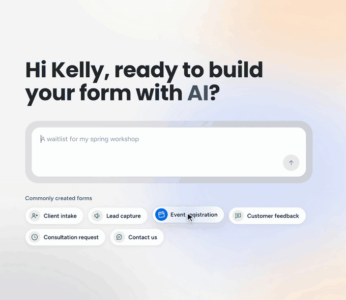
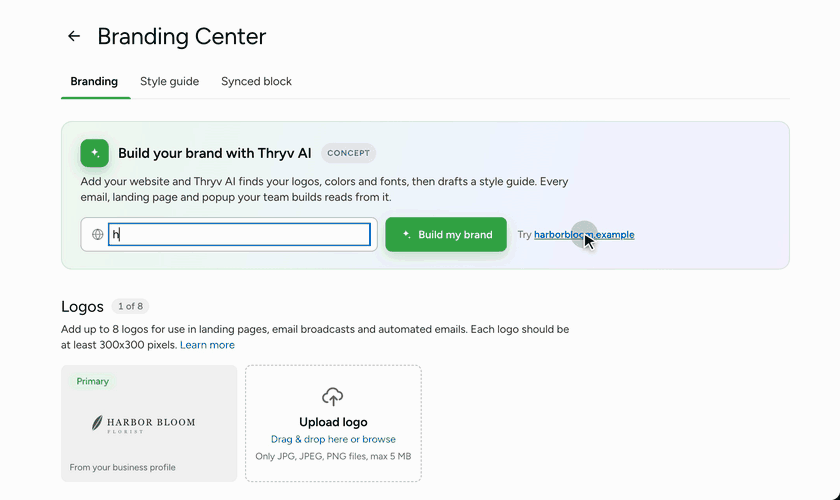

Platform, design systems and AI
Design strategy,
from the problem up.
I untangle complex product and business problems.
I lead product design end to end for B2B SaaS, from user research to design systems and AI. I partner closely with product and engineering, and mentor other designers.


Case studies

Merging seven form builders into one
Keap had seven form builders doing the same job, and no single team owned the problem. I merged them into one builder instead of rebuilding from scratch, and having one builder is what lets AI draft a full form from a prompt.

Building the Branding Center
A business’s brand lived in a document outside the product, so changing a logo meant redoing every email and landing page by hand. I designed one place to keep the brand that every builder reads from, and sixteen teams use it.

Moving listings to a new vendor
Picking the vendor wasn’t my call. The frontend was, so I specified a layer that keeps the user experience the same whichever vendor won.
Experience
Keap, acquired by Thryv Product design · platform
Led design for two development teams across forms, branding, listings and AI. Sixteen teams use the Branding Center I designed. I also ran the design team meetings and mentored six junior designers.
Blue Raster UX/UI design · agency
Data visualization and geospatial products for government agencies and enterprise clients, from research through implementation.
Allego Product design · enterprise SaaS
Sales enablement tools for an enterprise learning platform, where I built my enterprise UX and research practice.
Monterey DevOps Visual design · custom software
UI and visual design across client projects for a custom software development firm.
Education
UX ManagementNielsen Norman Group
MFA, Visual Communication DesignRochester Institute of Technology
BA, Graphic DesignUniversity of Shanghai for Science and Technology
Awards
Esri Ocean Storymap ContestFirst place · 2021
CGDA Visual Communication DesignExcellence award · 2016
My approach
I measure first
I pull the current numbers before I design anything. Otherwise I can’t tell you what changed.
I write down the why
I keep a record of why we made each call, so the reasoning still makes sense after a reorg or a new hire.
I tie design to the business
When I make a case to leadership, I talk about cost, risk and the roadmap, because those are what they’re deciding on.
I design the messy cases
Errors, empty accounts and data that doesn’t match. Those are what turn into support tickets, so I design them early.
Denise Barrett
I build systems and use AI to move faster.
I’ve spent over a decade in product design. Most recently, I worked on landing pages, email broadcasts, forms and automation tools for small businesses. Before that, I designed web and mobile apps for enterprise learning and geospatial mapping.
My work centers on creative problem solving. I lead design workshops, align design with business goals, and turn scattered versions of the same feature into one system everyone can use.
I lead without needing the title. I ran our design team meetings, shared team management work with the Design Manager, and mentored six junior designers. One of them now runs their own area independently.
Let’s talk
I want to help teams solve complex business and product problems, whatever shape they take. I’m open to every kind of challenge.
Looking for platform, design systems or AI product work at a B2B SaaS company, where the job is setting direction across more than one product area. Remote US.